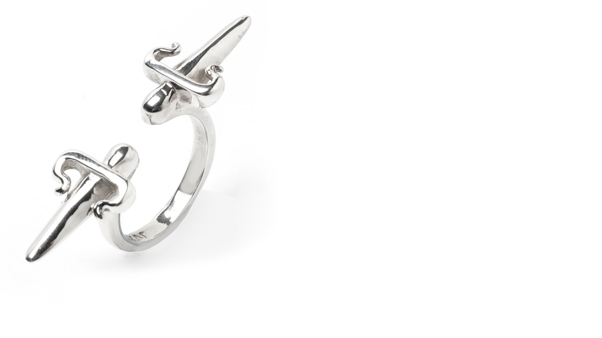
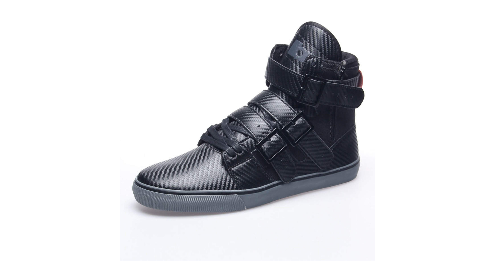

 
SOURCES
Super Junior,
Mr. Simple
, 2011
Boyfriend,
Boyfriend
, 2011
Aaron Yi,
"Justin Bieber, BOYFRIEND (Chinese Version)"
, 2012
Jay Chou 周杰倫,
Sign Language 手語
, 2013
Andy Hui 許志安,
男人最痛
, 2011
Taeyang,
You're My / I Need A Girl
, 2010
Softbank,
プラチナバンド SMAP 新CM
, 2012
ThaHILife 808,
ASIAN GUYS DATING WOMEN OF COLOR
, 2012
Neo Hwee Yong,
UAS:普通朋友 (Just Friends) David Tao 陶喆 Unplugged Acoustic
, 2012
YayYashi,
Boyfriend
, 2011
DhatAznJ,
They Don't Like You If
, 2013
DhatAznJ,
Q and A #21 Just Watch It To The End You'll Enjoy It
, 2014
Ridgeway Ng,
The Korean Man
, 2006
JPlueM5586,
Jay Park - Down & U Got It Bad White Love Concert 24th"
,2010
YG Entertainment,
Tae Yang, My Girl [SOLAR Concert]
, 2010